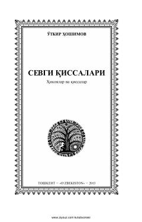

SQOʻtkir Hoshimovning muhabbat va sadoqat mavzusidagi eng sara qissalari to'plami.
Ushbu kitob Oʻzbekiston xalq yozuvchisi Oʻtkir Hoshimovning muhabbat mavzusidagi eng sara hikoya va qissalarini o'z ichiga oladi. Asarlarda insoniy tuyg'ularning nozik qirralari, sevgining sehri, quvonchlari va iztiroblari hayotiy tarzda ochib berilgan. Kitobxonlar bu betakror sahifalar orqali yozuvchining teran falsafiy va ta'sirchan ijod olamidan bahramand bo'lishlari mumkin.